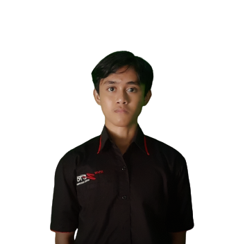

Saya Akhsan Ibrahim, saya adalah mahasiswa aktif program studi Informatika Universitas Muhammadiyah Surakarta (UMS) dan pengurus aktif divisi Keilmuan dan Riset Teknologi di Forum Open Source Teknik Informatika (FOSTI) UMS. Sangat berminat di bidang ilmu teknologi informasi, khususnya rekayasa perangkat lunak. Berusaha selalu fokus terhadap sesuatu yang diminati dan berambisi besar untuk mewujudkannya. Tetap bersabar, terus berusaha, pantang menyerah, dan menikmati proses yang ada agar semua bisa terwujud sempurna. Berkeinginan untuk segera menguasai ilmu tentang rekayasa perangkat lunak dengan memperbanyak ilmu dan pengalaman melalui berbagai pelatihan dari pihak berpengalaman.

Akhsan Ibrahim
Akhsan Ibrahim
Surakarta, Indonesia
Hai
Pendidikan
2020 - 2024 (perkiraan)
S1 Teknik Informatika
Universitas Muhammadiyah Surakarta
IPK saat ini = 3,95/4,00 (64 sks)
Pengalaman
-
FOSTI UMS
- Ketua Panitia kegiatan lomba FOSHUB
- Panitia Sponsorship kegiatan FOSTIFEST
- Peserta kursus pelatihan Cyber Security
- Pengurus Divisi Keilmuan dan Riset Teknologi
-
Program Studi Teknik Informatika
- Asisten Praktikum Algoritma dan Pemprograman
- Asisten Praktikum Sistem Digital
-
Mahasiswa Teknik Informatika (HIMATIF)
- Pemateri kegiatan HIMATIF Learning Center